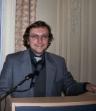
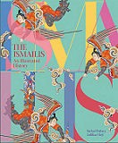
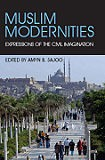
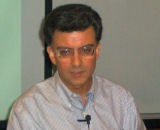
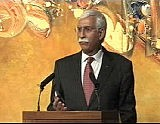
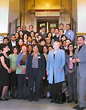
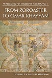
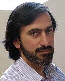
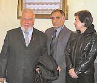
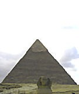

News Archive, 2008
Ethics in the Muslim Public Sphere
December 2008
A new lecture series – ‘Talking Ethics’ – was launched by The Institute of Ismaili Studies on 27 November 2008. Issues ranging from biomedical and environmental to political ethics in Muslim settings will be explored by leading scholars in the coming year. The inaugural speaker in the series was Professor Armando Salvatore of the University of Naples, whose perspective on the Muslim public sphere has received much acclaim. More
December 2008
A new lecture series – ‘Talking Ethics’ – was launched by The Institute of Ismaili Studies on 27 November 2008. Issues ranging from biomedical and environmental to political ethics in Muslim settings will be explored by leading scholars in the coming year. The inaugural speaker in the series was Professor Armando Salvatore of the University of Naples, whose perspective on the Muslim public sphere has received much acclaim. More
 IIS Scholar Speaks on Alhazen’s Perspectiva Tradition
IIS Scholar Speaks on Alhazen’s Perspectiva Tradition December 2008
Dr Nader El-Bizri presented a paper on ‘Phenomenological Perspectives on Vision and Space: Alhazen’s Perspectiva Tradition’, as part of the ‘Speakers Series’ held at the Centre for the Study of Theory and Criticism, University of Western Ontario, on 23 October 2008. Past speakers in the series have included Jean Baudrillard, David Carroll, Martin Jay, Agnes Heller, David Farrell Krell and Richard Rorty. More
 The IIS Welcomes GPISH Class of 2011
The IIS Welcomes GPISH Class of 2011 December 2008
The IIS welcomed 15 new students this year onto its Graduate Programme in Islamic Studies and Humanities (GPISH) in September 2008. The students of the class of 2011 originate from Canada, Pakistan, Syria, Tajikistan, USA and the United Kingdom and have diverse academic backgrounds, ranging from psychology, philosophy, and religious education to marketing, languages and political sciences. More
 Career Pathways Seminar for IIS Students
Career Pathways Seminar for IIS Students December 2008
The Department of Graduate Studies recently held its annual Career Pathways Seminar. The seminar provided an opportunity for first and second year students of the Graduate Programme in Islamic Studies and Humanities (GPISH) to acquaint themselves with various career options within the Aga Khan Development Network (AKDN) and at the IIS that they could consider upon completion of their studies. More
 GPISH Students Submit Their Field Projects
GPISH Students Submit Their Field Projects December 2008
The Class of 2009 of the Institute’s Graduate Programme in Islamic Studies and Humanities (GPISH) recently submitted their field project reports. The report is a culmination of the field-based research project they undertake at the end of their two years at the IIS. More
 IIS Publishes Introductory Volume on the Ikhwan al-Safa’
IIS Publishes Introductory Volume on the Ikhwan al-Safa’ November 2008
In association with the Oxford University Press, the IIS has published The Ikhwan al-Safa’ and their Rasa’il: An Introduction, which inaugurates the much-anticipated publication of the Rasa’il Ikhwan al-Safa’ (Epistles of the Brethren of Purity). As a preparatory volume, it offers a broad overview of this important and influential corpus, detailing conceptual and historical aspects of the work, as well as considering some more technical aspects of certain epistles. More
 Academic Seminar for IIS Alumni
Academic Seminar for IIS Alumni November 2008
The 2008 annual academic seminar for IIS alumni was held on 9-12 October in Cairo. The seminar, entitled Engaging with a City: Memory, Modernity and Culture in the City Victorious, was attended by 30 alumni from different graduate programmes over the past 25 years. More
 New IIS Publication on Philosophy in Persia
New IIS Publication on Philosophy in Persia November 2008
An Anthology of Philosophy in Persia, Volume 2: Ismaili Thought in the Classical Age, is the second in this multi-volume work presenting an overview of the tradition of philosophical thought in Persia that has continued for over two and a half millennia. Compiled, edited and introduced by S. H. Nasr and M. Aminrazavi, this volume deals with what may be considered the ‘Golden Age’ of Ismaili philosophy. More
 IIS Honours Class of 2008 Graduates
IIS Honours Class of 2008 Graduates November 2008
The 2008 graduates of the Institute’s Graduate Programme in Islamic Studies and Humanities (GPISH) celebrated their achievements with their families, friends, teachers and guests at the Graduation Ceremony held at the Ismaili Centre on 4 October 2008. More
Arrival of Second Cohort of the STEP
November 2008
After a successful first year, the Institute’s Department of Graduate Studies welcomed its second cohort of students to the Secondary Teacher Education Programme (STEP) in September 2008. The STEP is a joint initiative between the IIS and the Institute of Education, University of London, to train teachers for the delivery of the Secondary Curriculum materials being developed at IIS. More
November 2008
After a successful first year, the Institute’s Department of Graduate Studies welcomed its second cohort of students to the Secondary Teacher Education Programme (STEP) in September 2008. The STEP is a joint initiative between the IIS and the Institute of Education, University of London, to train teachers for the delivery of the Secondary Curriculum materials being developed at IIS. More
 IIS Announces PhD Scholarship Awards
IIS Announces PhD Scholarship Awards October 2008
Since 1997, the Institute of Ismaili Studies has awarded doctoral scholarships to suitable candidates whose work contributes to the academic mandate of the IIS. The three recipients of this year’s scholarships are Sultonbek Axsakolov, Shaftolu Gulamadov and Amier Saidulla. More
 The Summer Programme on Islam Returns to the UK
The Summer Programme on Islam Returns to the UK October 2008
The seventh annual ‘Summer Programme on Islam’ returned to the UK this year and was held in the historic surroundings of Sidney Sussex College, University of Cambridge. Thirty-six participants from twelve countries (Canada, Iran, Kenya, Malaysia, Pakistan, Portugal, Russia, Switzerland, Tajikistan, UAE, UK, and USA) participated in the eight-day programme. More
 IIS Director Bids Farewell
IIS Director Bids Farewell September 2008
In the autumn of 1998, Professor Nanji became the Director of the IIS. After leading the Institute for ten years, he is now leaving to join the Abbasi Programme in Islamic Studies at Stanford University as a Senior Associate Director. Under his leadership, the IIS expanded its programmes and activities and has emerged as an institution known for its high quality research and publications in areas related to Muslim cultures, particularly in the fields of Ismaili and Shi‘i Studies. More
 IIS Publishes the First Volume of Encyclopaedia Islamica
IIS Publishes the First Volume of Encyclopaedia Islamica September 2008
The IIS is pleased to announce the publication of Encyclopaedia Islamica by Brill of Leiden. This long-awaited publication is the first of a projected sixteen-volume edited and abridged translation of Da’irat al-Ma‘arif-i Buzurg-i Islami (The Great Islamic Encyclopaedia) by The Centre for Iranian and Islamic Studies in Tehran. Volume one comprises articles from Aba’ to Abu Hanifa and is available for purchase or online subscription from Brill. More
 Papers Presented at Biennial Conference on Iranian Studies
Papers Presented at Biennial Conference on Iranian Studies September 2008
IIS scholar Dr S. J. Badakhchani and IIS PhD student, Maryam Rezaee, presented papers at the Seventh Biennial Conference on Iranian Studies held in Toronto, Canada. The conference, chaired by Professor Tavakoli-Taghi of the University of Toronto, brought together 250 scholars and artists to share their research on Iranian culture. More
 IIS Publishes an Anthology of Ismaili Literature
IIS Publishes an Anthology of Ismaili Literature September 2008
The latest IIS publication, An Anthology of Ismaili Literature: A Shi‘i Vision of Islam, brings together extracts from a range of Ismaili texts, in both poetry and prose. Edited by Herman Landolt, Samira Sheikh and Kutub Kassam, the book aims to further readers’ knowledge of Ismaili history and thought by providing a glimpse into the intellectual life of the Ismaili communities in their own voices. More
 International Launch of Muslim Modernities
International Launch of Muslim Modernities August 2008
Canada’s Simon Fraser University (SFU) and the Aga Khan University’s Institute for the Study of Muslim Civilisations (ISMC) co-sponsored the launch of the IIS publication Muslim Modernities: Expressions of the Civil Imagination, in Vancouver on July 24. SFU Professor Derryl MacLean and ISMC director Dr. Abdou Filali-Ansary discussed the themes explored in the volume with the editor, Dr. Amyn B. Sajoo. More
August 2008
Launch of The Ismailis: An Illustrated History
August 2008
On July 3, 2008, the IIS launched The Ismailis: An Illustrated History at the Excel Centre in London. The book launch was held during the recent visit of His Highness the Aga Khan, 49th Imam of the Ismailis, to the United Kingdom on the occasion of the Golden Jubilee of his accession to the Imamat.
View Sample Pages. More
August 2008
On July 3, 2008, the IIS launched The Ismailis: An Illustrated History at the Excel Centre in London. The book launch was held during the recent visit of His Highness the Aga Khan, 49th Imam of the Ismailis, to the United Kingdom on the occasion of the Golden Jubilee of his accession to the Imamat.
View Sample Pages. More
 IIS Staff Organise the Gujarat Studies Association Conference
IIS Staff Organise the Gujarat Studies Association Conference July 2008
Dr. Anjoom Mukadam and Dr. Sharmina Mawani organised the 2nd biennial Gujarat Studies Association (GSA) conference in Toronto, Canada on 23 – 24 May 2008. The theme of the conference, Identities: Reflections on Global Gujarati Communities, attracted delegates from North America, Europe, South Asia, the Far East, Australia and New Zealand. More
 IIS Scholar Participates in the 7th Building Bridges Seminar
IIS Scholar Participates in the 7th Building Bridges Seminar July 2008
Dr Reza Shah-Kazemi, Research Associate at the IIS, participated in the 7th Building Bridges Seminar, convened by the Archbishop of Canterbury, and held in Rome between 5 and 8 May, 2008. This year’s seminar addressed the theme: ‘Communicating the Word: Revelation, Translation and Interpretation in Christianity and Islam’. More
New IIS Publication on ‘Muslim Modernities’
June 2008
The debate on ‘Islam and modernity’ has gained prominence since the events of September 11, 2001, in the West and the Muslim world alike. Issues of pluralist governance, civil society and human rights – as well as of public ethics – have come to be linked more forcefully than ever with secularism, which in turn is felt to be a hallmark of modernity. ‘Yet there is more than one way of being secular, as indeed there is of being modern, or Muslim’, argues the book’s editor, Dr. Sajoo. More
June 2008
The debate on ‘Islam and modernity’ has gained prominence since the events of September 11, 2001, in the West and the Muslim world alike. Issues of pluralist governance, civil society and human rights – as well as of public ethics – have come to be linked more forcefully than ever with secularism, which in turn is felt to be a hallmark of modernity. ‘Yet there is more than one way of being secular, as indeed there is of being modern, or Muslim’, argues the book’s editor, Dr. Sajoo. More
'The Penguin Dictionary of Islam' by Prof. Azim Nanji
June 2008
Professor Azim Nanji, Director of The Institute of Ismaili Studies, along with Razia Nanji, have completed a long-standing project that has now been published by the Penguin Reference Library titled ‘Penguin Dictionary of Islam’. This volume is intended to be a source of information pertaining to the history, cultures, and traditions of Muslim societies from the seventh century C.E. to the present. More
June 2008
Professor Azim Nanji, Director of The Institute of Ismaili Studies, along with Razia Nanji, have completed a long-standing project that has now been published by the Penguin Reference Library titled ‘Penguin Dictionary of Islam’. This volume is intended to be a source of information pertaining to the history, cultures, and traditions of Muslim societies from the seventh century C.E. to the present. More
Professor Nanji Contributes to the Book 'Paradise Found'
June 2008
Professor Azim Nanji contributed a chapter to a coffee table book on the horticultural treasures of Asia. The book, titled Paradise Found: Journeys through Noble Gardens of Asia, was launched at the Chelsea Flower show by H R.H. Princess Alexandra as part of The Royal Hospital Chelsea’s latest fundraising initiative. More
June 2008
Professor Azim Nanji contributed a chapter to a coffee table book on the horticultural treasures of Asia. The book, titled Paradise Found: Journeys through Noble Gardens of Asia, was launched at the Chelsea Flower show by H R.H. Princess Alexandra as part of The Royal Hospital Chelsea’s latest fundraising initiative. More
 IIS Scholar Presents Paper at the American Oriental Society Annual Meeting
IIS Scholar Presents Paper at the American Oriental Society Annual Meeting June 2008
Dr Ali Qutbuddin presented a paper entitled, ‘Abu Hatim al-Razi: The Concept of the Universality of Religions in Fatimid Thought and Practice’ at the Annual Meeting of the American Oriental Society in March 2008 in Chicago, USA. The paper explored possible theological reasons for the attitude of the Fatimid rulers towards their Muslim and non-Muslim subjects. More
 Toward a New Islamic Humanism
Toward a New Islamic Humanism May 2008
Dr Abdelwahab El-Affendi spoke at the Institute on 13 May, 2008 on biotechnology’s remaking of the world, and possibly our species, asking how Islamic humanism might respond to the ensuing challenge in what has come to be called ‘postmodernity’. This talk at the Institute was the last in the series on Contemporary Islam(s) and Muslims. More
Two IIS Scholars Present Papers at University of Ghent, Belgium
May 2008
The seventeenth colloquium on the history of Egypt and Syria in the Fatimid, Ayyubid and Mamluk Eras (10th -15th century) was held at the University of Ghent in Belgium from 14th to 16th May 2008. Dr Shainool Jiwa and Dr Arzina R. Lalani of IIS presented papers at this colloquium. More
May 2008
The seventeenth colloquium on the history of Egypt and Syria in the Fatimid, Ayyubid and Mamluk Eras (10th -15th century) was held at the University of Ghent in Belgium from 14th to 16th May 2008. Dr Shainool Jiwa and Dr Arzina R. Lalani of IIS presented papers at this colloquium. More
IIS Alumni present at International Conference
May 2008
During March 28th - 30th 2008 the University of Victoria hosted a remarkable conference sponsored by the International Centre for Contemporary Middle Eastern Studies (ICCMES), which brought together over 70 scholars from all over the globe, of whom nearly half were from Muslim societies. Organised around a general theme, ‘Muslim World and the West: Emerging Avenues for Convergence,’... More
May 2008
During March 28th - 30th 2008 the University of Victoria hosted a remarkable conference sponsored by the International Centre for Contemporary Middle Eastern Studies (ICCMES), which brought together over 70 scholars from all over the globe, of whom nearly half were from Muslim societies. Organised around a general theme, ‘Muslim World and the West: Emerging Avenues for Convergence,’... More
Knowledge Symposium
May 2008
The knowledge sector is increasingly shaping the social and economic dimensions of our lives and, as a consequence, the idea of knowledge-based societies has gained popularity. To apprise the Ismaili community in the UK about the meaning, importance and dimensions of such a society, the Aga Khan Education Board for UK organised an event called the Knowledge Symposium. More
May 2008
The knowledge sector is increasingly shaping the social and economic dimensions of our lives and, as a consequence, the idea of knowledge-based societies has gained popularity. To apprise the Ismaili community in the UK about the meaning, importance and dimensions of such a society, the Aga Khan Education Board for UK organised an event called the Knowledge Symposium. More
European Chapter Group of the IIS Alumni Association meets in London
May 2008
The European Chapter Group held a two day annual meeting at the University of Westminster in London over the weekend of 5th and 6th April 2008. Guest speakers included Karen Armstrong and Nimet Rener. More
May 2008
The European Chapter Group held a two day annual meeting at the University of Westminster in London over the weekend of 5th and 6th April 2008. Guest speakers included Karen Armstrong and Nimet Rener. More
New IIS Publication on Philosophy in Persia
April 2008
An Anthology of Philosophy in Persia, Vol. 1: From Zoroaster to ‘Umar Khayyam presents a millennial tradition of philosophy in Persia. Edited by S. H. Nasr and M. Aminrazavi, the first volume begins with the period from Zoroaster and ends with ‘Umar Khayyam who died in the early twelfth century CE. More
April 2008
An Anthology of Philosophy in Persia, Vol. 1: From Zoroaster to ‘Umar Khayyam presents a millennial tradition of philosophy in Persia. Edited by S. H. Nasr and M. Aminrazavi, the first volume begins with the period from Zoroaster and ends with ‘Umar Khayyam who died in the early twelfth century CE. More
 Bridging Legal Modernity and Tradition in Muslim Contexts
Bridging Legal Modernity and Tradition in Muslim Contexts April 2008
Mohamed Keshavjee, a scholar and lawyer who also serves as a member of the Institute’s Board of Governors, spoke on the merits of alternative dispute resolution (ADR) by Muslim communities as a dynamic field for the mediation of modernity and tradition. The talk was held at the Institute on 8 April 2008 as part of the series entitled, Contemporary Islam(s) and Muslims. More
April 2008
Dr Reza Shah-Kazemi, Research Associate at the IIS, participated in a discussion on ‘Islam, Christianity and other Faiths’. Hosted by the Institute of Arabic and Islamic Studies (IAIS), University of Exeter, the talk dealt with Muslim and Christian perspectives on the concept of salvation in other religions. Professor Gavin D’Costa, who teaches Religious Studies at Bristol and is a leading Catholic theologian and author, was the other speaker. More
Delegation from the Institute of Oriental Studies in Moscow visits IIS
April 2008
A three-member delegation from the Moscow-based Institute of Oriental Studies (IOS), visited the IIS on 28 February 2008 to explore possible areas of collaboration between the two institutions. The delegation comprised the Director of IOS, Professor Rastislav Rybakov, their Academic Coordinator, Dr. Nadejda Yemeliyanova, and Mr. Davlat Khudonazarov, who is a Research Fellow at the IOS. More
April 2008
A three-member delegation from the Moscow-based Institute of Oriental Studies (IOS), visited the IIS on 28 February 2008 to explore possible areas of collaboration between the two institutions. The delegation comprised the Director of IOS, Professor Rastislav Rybakov, their Academic Coordinator, Dr. Nadejda Yemeliyanova, and Mr. Davlat Khudonazarov, who is a Research Fellow at the IOS. More
 Ismail Serageldin Speaks on ‘Modernisation and Cultural Identity in Islam’
Ismail Serageldin Speaks on ‘Modernisation and Cultural Identity in Islam’ March 2008
Dr Ismail Serageldin, Director of the Library of Alexandria and author of numerous books, explored architectural and artistic expressions, past and present, in the Muslim world in his lecture on ‘Modernisation and Cultural Identity in Islam’. This was the sixth in the Contemporary Islam(s) & Muslims (CIM) series of talks, held at the IIS on 14 March 2008. More
STEP students visit Cairo
March 2008
Students of the first cohort of the Secondary Teacher Education Programme (STEP) recently returned from an educational tour of Cairo, Egypt (February 13–19, 2008). This visit was the second of two field trips that STEP participants take as part of their double master’s degree course. The first such visit, taken in November 2007, was to Cordoba Spain. More
March 2008
Students of the first cohort of the Secondary Teacher Education Programme (STEP) recently returned from an educational tour of Cairo, Egypt (February 13–19, 2008). This visit was the second of two field trips that STEP participants take as part of their double master’s degree course. The first such visit, taken in November 2007, was to Cordoba Spain. More
 Three IIS publications receive prestigious Iranian awards
Three IIS publications receive prestigious Iranian awards March 2008
Three IIS publications were amongst the 19 books declared as winners at the ‘15th Iran International Book of the Year Awards’ (Kitab-i Sal Jayizih-i Jahani). These were Sufi Hermeneutics: The Qur’an Commentary of Rashid al-Din Maybudi, Justice and Remembrance; Introducing the Spirituality of Imam ‘Ali and ‘Attar and the Persian Sufi Tradition: The Art of Spiritual Flight. More
 New Publication on ‘Ghazali: The Revival of Islam’ by Eric Ormsby of the IIS
New Publication on ‘Ghazali: The Revival of Islam’ by Eric Ormsby of the IIS March 2008
Professor Eric Ormsby, who has been reading, teaching and writing about the works of Abu Hamid al-Ghazali (1058-1111 CE) for almost thirty years, has written a book for the general reader on this influential theologian and mystic. The new book attempts to disentangle the many Ghazalis of legend and polemic to present him anew, in clear and readable fashion. More
 Contemporary Islam(s) & Muslims series lecture on ‘The Umma in the City’
Contemporary Islam(s) & Muslims series lecture on ‘The Umma in the City’ February 2008
Dr Amira Bennison of the Faculty of Oriental Studies at the University of Cambridge spoke on the urban life of three pre-modern cities under Muslim rule, as responses to specific social, political and religious needs. ‘The Umma in the City: Cordoba, Marrakesh and Isfahan’, was delivered at The Institute of Ismaili Studies on 14 February 2008. More
 IIS Scholar presents at St. John’s College, Oxford University
IIS Scholar presents at St. John’s College, Oxford University February 2008
Dr. Karen Bauer, a Research Associate of the IIS, presented a paper entitled ‘Critique and Change in the Interpretations of the Quranic Verse 4:34’ at the Middle East Graduate Seminar, St. John’s College, Oxford University, on January 21, 2008. More
 Annemarie Schimmel Scholarship Awarded to Professor Rahile Dawut
Annemarie Schimmel Scholarship Awarded to Professor Rahile Dawut February 2008
The Institute of Ismaili Studies (IIS) has awarded its second Annemarie Schimmel Scholarship, which is given every three years, to Professor Rahile Dawut, Director of the Center for Anthropology and Folklore and Professor at the School of Humanities at Xinjiang University. One aim of Professor Dawut’s research is to further the understanding of Islam in China. More
 IIS launches its first three Jubilee publications
IIS launches its first three Jubilee publications January 2008
As part of The Institute of Ismaili Studies' Golden Jubilee publications, three new books were introduced at the Scarborough Ismaili Jamatkhana, Toronto, by Professor Azim Nanji and Dr. Fahmida Suleman, on 27 December 2007. This was followed by a similar launch at the Burnaby Ismaili Centre in Vancouver on 1 January 2008. More
 'CIM' lecture series: 'Everyday modernity in the Arab world'
'CIM' lecture series: 'Everyday modernity in the Arab world' January 2008
Professor Zubaida spoke on the emergence of modernity in the Arab world and its ‘everyday’ expressions in tension with state ideology on 15 January 2008. This was the fourth lecture in the Contemporary Islam(s) and Muslims (CIM) series organised by the Institute. More
 Career Pathways Seminar for IIS Students and Alumni
Career Pathways Seminar for IIS Students and Alumni January 2008
The Department of Graduate Studies held its annual Career Pathways Seminar on 15 December, 2007. The seminar provided an opportunity for first and second year students of the Graduate Programme in Islamic Studies and Humanities (GPISH) as well as recent graduates to acquaint themselves with various career options available to them upon completion of their studies. More
 Gateways
Gateways